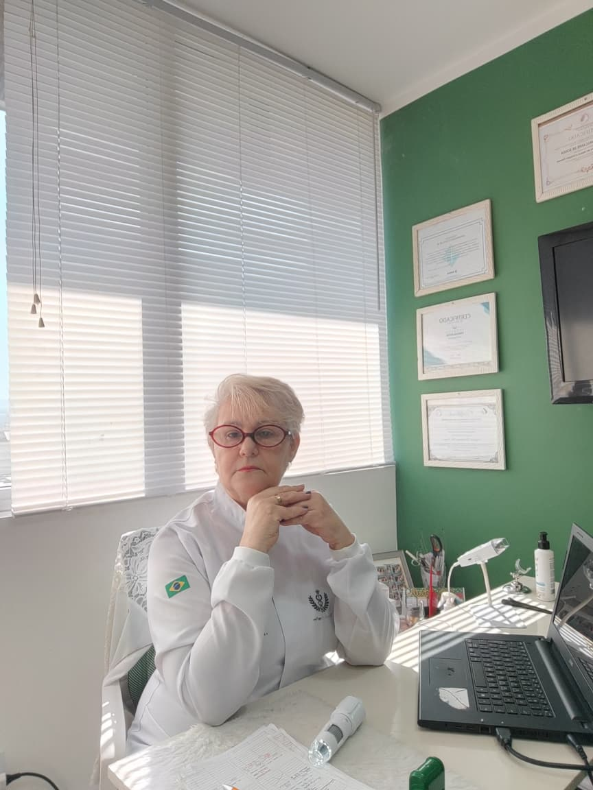

Seu cabelo merece ser compreendido antes de ser tratado.
Queda, afinamento, oleosidade, coceira, descamação ou redução do volume podem ter diferentes causas. Por isso, aqui o tratamento não começa com um procedimento. Começa com uma investigação.
& DEDICAÇÃO

Não existe um tratamento perfeito para todo mundo. Existe o tratamento adequado para cada caso.
Cada couro cabeludo é único. Durante o atendimento, avaliamos sua história, suas queixas, o couro cabeludo e os fios para compreender suas necessidades antes de definir qualquer protocolo.
Sem protocolos genéricos e sem indicar procedimentos apenas porque são mais caros.
Tudo começa por aqui.
Consulta e anamnese
Conversamos sobre sua queixa, quando ela começou, histórico, rotina e fatores que possam estar relacionados às alterações percebidas.
Tricoscopia
Uma análise detalhada do couro cabeludo e dos fios auxilia na identificação de alterações que precisam de atenção.
Investigação laboratorial
Quando houver indicação, exames laboratoriais podem complementar a investigação.
Estratégia personalizada
A partir da avaliação, é definido um plano de cuidados de acordo com as necessidades identificadas.
Diferentes necessidades exigem diferentes estratégias.
Os recursos terapêuticos são escolhidos de acordo com aquilo que for identificado durante a avaliação.
Um tratamento eficiente não precisa ser o mais caro.
Mais procedimentos não significam necessariamente um tratamento melhor. Acredito em utilizar aquilo que realmente possui propósito dentro do protocolo de cada paciente.
“Não é sobre fazer tudo. É sobre fazer o que o seu caso precisa.”
Meu compromisso é buscar uma estratégia coerente, personalizada e responsável, respeitando cada etapa do acompanhamento.
Uma trajetória construída com coragem, experiência e propósito.
Com 30 anos de experiência como cabeleireira, Suzana Cavalcante construiu sua vida profissional acompanhando de perto a relação das pessoas com os cabelos e com a autoestima.
Depois dos 50 anos, decidiu dar um novo passo na própria história: formou-se em Estética e aprofundou sua atuação em Tricologia. Hoje, reúne a experiência prática de décadas com um olhar técnico e individualizado para oferecer um atendimento acolhedor, cuidadoso e focado nas necessidades de cada pessoa.
DA SEMANA
SOS Queda Capilar
Para pacientes de primeira vez: avaliação especializada, tricoscopia, investigação das possíveis causas, orientação individualizada e planejamento inicial. São 4 encontros no total: avaliação + 3 sessões de tratamento capilar.
Escolha seu horário com tranquilidade
Você faz a solicitação em poucos passos. O horário fica pendente até a Dra. Suzana confirmar no painel.
Conte para a Dra. Suzana como foi seu atendimento.
Seu comentário será enviado para análise e só será publicado depois da aprovação da profissional.
Como foi sua experiência?
Leva menos de um minuto.
Avaliações aprovadas
Onde encontrar a Dra. Suzana
R. José Bonifácio, 1050 – Todos os Santos, Rio de Janeiro – RJ, 20770-240 • Bloco 2, sala 416.
Dra. Suzana Cavalcante Tricologia
R. José Bonifácio, 1050
Todos os Santos • Rio de Janeiro – RJ
20770-240 • Bloco 2, sala 416
Antes da sua avaliação
Como funciona a primeira avaliação?
A Dra. Suzana conversa com você, entende sua queixa e realiza a avaliação necessária para orientar os próximos passos.
Preciso levar exames?
Se você tiver exames recentes relacionados ao seu quadro, pode levá-los. A necessidade de outros exames poderá ser orientada durante o atendimento.
Como faço para agendar?
Use o formulário de agendamento desta página ou fale diretamente pelo WhatsApp.